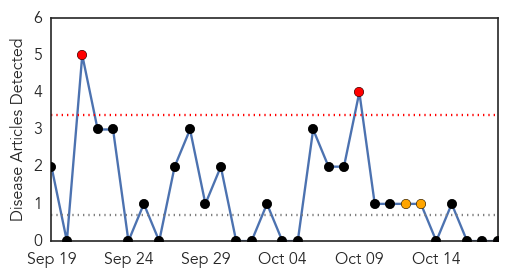
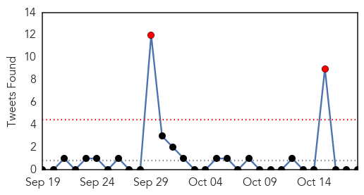
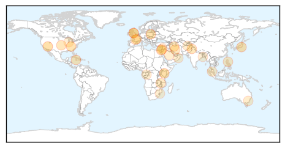

Mold/Fungal
30-Day Web Trend
2 alerts, 2 warnings

30-Day Twitter Trend
0 alerts, 0 warnings

Article Locations


Article Confidences

Top Articles:
-
No articles found for Oct 18, 2015
Top Tweets:
-
No tweets found for Oct 18, 2015
Unknown
30-Day Web Trend
0 alerts, 0 warnings

30-Day Twitter Trend
2 alerts, 0 warnings

Article Locations

Article Confidences

Top Articles:
- 0.990
- Camels in Kenya test positive for MERS virus
- 0.989
- This expert wants you to give the flu shot another chance
- 0.917
- Chicago Tribune
- 0.917
- Chicago Tribune
- 0.890
- Workers, managers line up for flu shots
- 0.834
- Agent causing infection in newborns at UWI hospital identified
- 0.820
- Infection causing mystery illness in newborns at UWI Hospital, identified
- 0.785
- Call for more to take flu vaccine
- 0.785
- Health Minister instructs UHWI to do everything necessary to stop infection of newborn
- 0.785
- The Kathmandu Post
- 0.754
- Health Minister Gets His Flu Shot
- 0.730
- Merkel, Turkish PM hail progress on migrants after talks
- 0.730
- EU adopts legislative framework to lift sanctions against Iran
- 0.707
- Swiss anti-immigration party poised to win record seats in parliament
- 0.707
- French customs seizes €20 million in cannabis hash
- 0.702
- Excessive bleeding, a health challenge
- 0.702
- Thousands flee as deadly Typhoon Koppu hits northern Philippines
- 0.702
- Israeli soldier killed in bus station gun attack
- 0.686
- Unknown cause in salmonella outbreak
- 0.641
- Report if children suffer ill effects, parents advised - Nation
- 0.599
- ABC News (Australian Broadcasting Corporation)
- 0.582
- Lower Back Pain Arthritis Symptoms Roseville California
- 0.562
- Can antibiotics fight viruses?
- 0.559
- Diarrhea kills 18 in Mozambique
- 0.557
- MoPH Presents Report On 6-Month Achievements
- 0.554
- Data shows Congo virus in some parts of Punjab, Sindh, Pakhtunkhwa
- 0.553
- Teams sent to recruit doctors from 9 countries
- 0.510
- Alzheimer’s may be third leading cause of deaths in U.S. according to new study
- 0.509
- Wadi Barada journalist: Without clean water, ‘intestinal ailments will spread’
- 0.503
- News Details
Top Tweets:
-
No tweets found for Oct 18, 2015